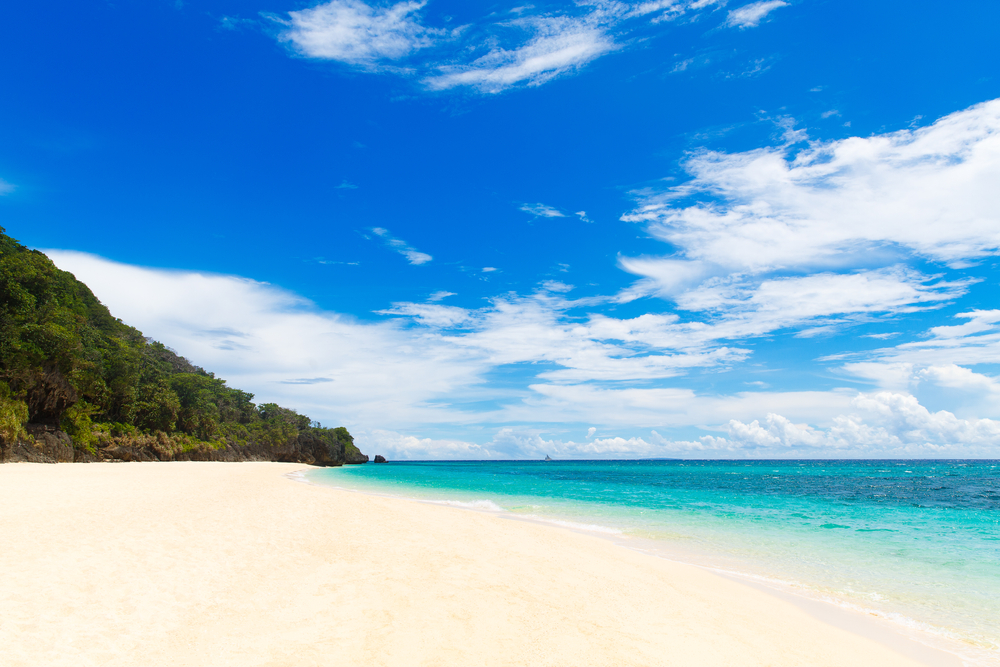

Favorite Places


Baguio City has one of the most memorable places I have been to. The weather is cold and nice, the tourist spots are just very relaxing, an example is shown here which is burnham park which is popular in Baguio City.
Boracay islands is by far the best beach I have been onto. The sands are very white and soft to the feet. You can walk for miles and not get tired of the beautiful sceneries and cold breeze of air especially in the morning. It is a great get away from real life sometimes.